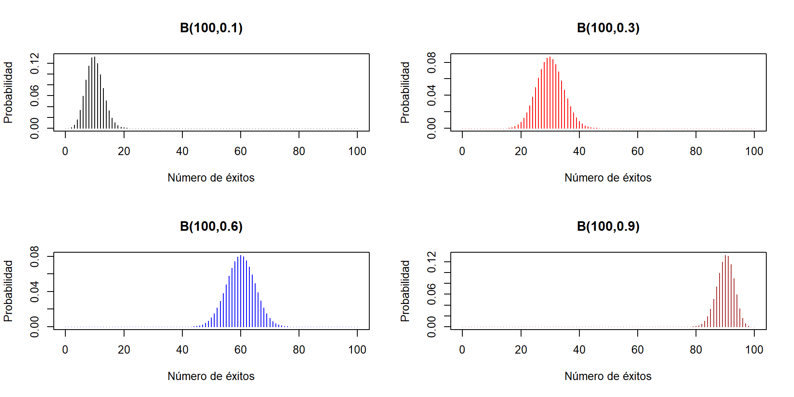

5 Variables aleatorias
Una variable aleatoria sobre una población \(\Omega\) es una función \[ X: \Omega\to \mathbb{R} \] que asigna a cada sujeto de \(\Omega\) un número real. La idea intuitiva tras esta definición es que una variable aleatoria mide una característica de los sujetos de \(\Omega\) que varía al azar de un sujeto a otro. Por ejemplo:
Tomamos una persona de una población y medimos su nivel de colesterol, o su altura, o su número de hijos… En este caso, \(\Omega\) es la población bajo estudio, de la que tomamos la persona que medimos.
Lanzamos una moneda equilibrada 3 veces y contamos las caras que obtenemos. En este caso, \(\Omega\) es la población virtual de las secuencias de 3 lanzamientos de una moneda equilibrada.
Importante
Procurad adquirir la disciplina de describir siempre las variables aleatorias mediante una plantilla del estilo de “Tomamos … y medimos …”, para que os quede claro cuál es la unidad muestral, la población y las unidades de medición si es necesario. Por ejemplo:
- “Tomamos una persona de Mallorca y medimos su altura (en cm)”.
Fijaos en que esta variable aleatoria no es la misma que
- “Tomamos una persona de Mallorca y medimos su altura (en m)”
porque, aunque mide lo mismo sobre los mismos sujetos, les asigna números diferentes. Y también es diferente de
- “Tomamos una persona de Suecia y medimos su altura (en cm)”
porque ha cambiado la población.
En cambio en
- “Lanzamos una moneda 3 veces al aire y contamos las caras”
no hay necesidad de especificar unidades, a no ser que vayáis a usar una unidad inesperada (yo qué sé, que contéis las caras en fracciones de docena).
Lo que más nos interesará de una variable aleatoria son las probabilidades de los sucesos que define. ¿Y qué tipo de sucesos son los que nos interesan cuando medimos características numéricas? Pues básicamente sucesos definidos mediante igualdades y desigualdades. Por ejemplo, si \(X\) es la variable aleatoria “Tomamos una persona y medimos su nivel de colesterol en plasma (en mg/dl)”, nos pueden interesar sucesos del estilo de:
El conjunto de las personas cuyo nivel de colesterol está entre 200 y 240. Lo denotaremos \[ 200\leqslant X\leqslant 240 \]
El conjunto de las personas cuyo nivel de colesterol es menor o igual que 200: \[ X\leqslant 200 \]
El conjunto de las personas cuyo nivel de colesterol es mayor que 180: \[ X>180 \]
El conjunto de las personas cuyo nivel de colesterol es exactamente 180: \[ X=180 \]
Etc.
Normalmente, de estos sucesos lo que nos interesará será su probabilidad, y entonces usaremos notaciones del estilo de las siguientes:
\(P(200\leqslant X\leqslant 240)\). Esto denota la probabilidad de que una persona tenga el nivel de colesterol entre 200 y 240. Para abreviar, lo leeremos “la probabilidad de que \(X\) esté entre 200 y 240”. Y recordad que nuestras probabilidades son proporciones. Por lo tanto, esta probabilidad es la proporción de personas (de la población \(\Omega\) donde hayamos definido la variable \(X\)) con nivel de colesterol entre 200 y 240.
\(P(X\leqslant 200)\): La probabilidad de que una persona tenga el nivel de colesterol menor o igual que 200; o la probabilidad de que \(X\) sea menor o igual que 200; o la proporción de personas con nivel de colesterol menor o igual que 200…
Etc.
En este contexto, indicaremos normalmente la unión con una o y la intersección con una coma. Por ejemplo, si \(X\) es la variable aleatoria “Lanzamos una moneda 6 veces y contamos las caras”:
\(P(X\leqslant 2\text{ o }X\geqslant 5)\): Probabilidad de sacar como máximo 2 caras o como mínimo 5.
\(P(2\leqslant X, X< 5)\): Probabilidad de sacar un número de caras que sea mayor o igual que 2 y menor que 5; es decir, \(P(2\leqslant X< 5)\).
Dos variables aleatorias \(X,Y\) son independientes cuando, para todos los pares de valores \(a,b\in \mathbb{R}\), los sucesos \[ X\leqslant a, Y\leqslant b \] son independientes, lo que viene a decir intuitivamente que el valor que toma una de ellas sobre un sujeto no influye en la probabilidad del valor que toma la otra.
Tip
Recordad que los sucesos \(X\leqslant a\) e \(Y\leqslant b\) son independientes cuando satisfacen las tres condiciones equivalentes siguientes: \[ \begin{array}{l} P(X\leqslant a|Y\leqslant b)=P(X\leqslant a)\\ P(Y\leqslant b|X\leqslant a)=P(Y\leqslant b)\\ P(X\leqslant a, Y\leqslant b)=P(X\leqslant a)\cdot P(Y\leqslant b) \end{array} \]
Por ejemplo, si tomamos una persona y:
\(X\): le pedimos que lance una moneda 3 veces y contamos las caras
\(Y\): medimos su nivel de colesterol en plasma (en mg/dl)
(seguramente) \(X\) e \(Y\) son independientes.
Más en general, unas variables aleatorias \(X_1,X_2,\ldots,X_n\) son independientes cuando, para cualesquiera \(a_1,a_2,\ldots,a_n\in \mathbb{R}\), los sucesos \[ X_1\leqslant a_1, X_2\leqslant a_2,\ldots, X_n\leqslant a_n \] son independientes. Es decir, cuando los valores que toman algunas de estas variables sobre un sujeto nunca influyen en los valores que toman las otras.
Vamos a distinguir dos tipos de variables aleatorias:
Discretas: Sus posibles valores son datos cuantitativos discretos:
- Número de caras en 3 lanzamientos de una moneda
- Número de hijos
- Número de casos nuevos de COVID-19 en un día en Mallorca
Continuas: Sus posibles valores son datos cuantitativos continuos:
- Peso
- Nivel de colesterol en sangre
- Diámetro de un tumor
Empezamos tratando las variables aleatorias discretas.
5.1 Variables aleatorias discretas
5.1.1 Densidad y distribución
Sea \(X: \Omega\to \mathbb{R}\) una variable aleatoria discreta.
Su dominio \(D_X\) es el conjunto de los valores que puede tomar: más concretamente, el conjunto de los \(x\in \mathbb{R}\) tales que \(P(X=x)>0\).
Su función de densidad es la función \(f_X:\mathbb{R}\to [0,1]\) definida por \[ f_X(x)=P(X=x) \] Es decir, la función que asigna a cada \(x\in \mathbb{R}\) la probabilidad de que \(X\) valga \(x\) (la proporción de sujetos de la población en los que \(X\) vale \(x\), la frecuencia relativa del valor \(x\) en el total de la población…).
Su función de distribución es la función \(F_X:\mathbb{R}\to [0,1]\) definida por \[ F_X(x)=P(X\leqslant x) \] Es decir, la función que asigna a cada \(x\in \mathbb{R}\) la probabilidad de que el valor de \(X\) sea \(\leqslant x\) (la proporción de sujetos de la población en los que \(X\) vale \(\leqslant x\), la frecuencia relativa acumulada de \(x\) en el total de la población… También se la suele llamar función de probabilidad acumulada para poner énfasis en esta última interpretación).
Sea \(X\) la variable aleatoria “Lanzamos 3 veces una moneda equilibrada y contamos las caras”. Entonces
Su dominio es el conjunto de sus posibles valores: \(D_X=\{0,1,2,3\}\).
Su función de densidad viene definida por \(f_X(x)=P(X=x)\):
- \(f_X(0)=P(X=0)=1/8\) (la probabilidad de sacar 0 caras)
- \(f_X(1)=P(X=1)=3/8\) (la probabilidad de sacar 1 cara)
- \(f_X(2)=P(X=2)=3/8\) (la probabilidad de sacar 2 caras)
- \(f_X(3)=P(X=3)=1/8\) (la probabilidad de sacar 3 caras)
- \(f_X(x)=P(X=x)=0\) para cualquier otro valor de \(x\) (la probabilidad de sacar \(x\) caras es 0 si \(x\notin\{0,1,2,3\}\))
En resumen, la función de densidad de \(X\) es \[ f_X(x) =\left\{ \begin{array}{ll} 1/8 & \text{ si $x=0$}\\ 3/8 & \text{ si $x=1$}\\ 3/8 & \text{ si $x=2$}\\ 1/8 & \text{ si $x=3$}\\ 0 & \text{ si $x\neq 0,1,2,3$} \end{array}\right. \]

Nota
Si \(X\) es una variable aleatoria discreta, \(P(X\in A)=0\) para cualquier subconjunto \(A\) disjunto de \(D_X\), porque \(X\) no puede tomar ningún valor de \(A\). Por ejemplo, ¿cuál es la probabilidad de sacar entre 2.5 y 2.7 caras al lanzar 3 veces una moneda? 0 ¿Y la de sacar \(\pi\) caras? 0 de nuevo.
Veamos su función de distribución \(F_X\). Recordad que \(F_X(x)=P(X\leqslant x)\) y que nuestra variable solo puede tomar los valores 0, 1, 2 y 3.
Si \(x<0\), \(F_X(x)=P(X\leqslant x)=0\) porque \(X\) no puede tomar ningún valor estrictamente negativo.
Si \(0\leqslant x<1\), el único valor \(\leqslant x\) que puede tomar \(X\) es el 0 y por lo tanto \[ F_X(x)=P(X\leqslant x)=P(X=0)=f_X(0)=1/8 \]
Si \(1\leqslant x<2\), los únicos valores \(\leqslant x\) que puede tomar \(X\) son 0 y 1 y por lo tanto \[ \begin{array}{rl} F_X(x)\!\!\!\!\! & =P(X\leqslant x)=P(X=0\text{ o }X=1)\\ & =f_X(0)+f_X(1)=4/8=1/2 \end{array} \]
Si \(2\leqslant x<3\), los únicos valores \(\leqslant x\) que puede tomar \(X\) son 0, 1 y 2 y por lo tanto \[ \begin{array}{rl} F_X(x)\!\!\!\!\! & =P(X\leqslant x)=P(X=0\text{ o }X=1\text{ o }X=2)\\ & =f_X(0)+f_X(1)+f_X(2)=7/8 \end{array} \]
Si \(x\geqslant 3\), seguro que obtenemos un número de caras \(\leqslant x\) y por lo tanto \(F_X(x)=P(X\leqslant x)=1\).
Así pues, la función \(F_X\) es la función \[ F_X(x) =\left\{ \begin{array}{ll} 0 & \text{ si $x<0$}\\ 1/8 & \text{ si $0\leqslant x< 1$}\\ 4/8 & \text{ si $1\leqslant x< 2$}\\ 7/8 & \text{ si $2\leqslant x< 3$}\\ 1 & \text{ si $3\leqslant x$} \end{array}\right. \] Su gráfico es el siguiente:

Observad en este gráfico que esta función de distribución \(F_X\) es creciente y escalonada, y el valor en los puntos de escalón es el superior. Esto es general. Si \(X\) es una variable aleatoria discreta:
\(F_X\) es una función escalonada, con saltos en los valores de \(D_X\), que son los únicos con probabilidad estrictamente mayor que 0 y por lo tanto los únicos que “suman” probabilidad.
\(F_X\) es creciente, porque si \(x\leqslant y\), todos los sujetos tales que \(X\leqslant x\) también cumplen que \(X\leqslant y\), y por lo tanto \[ P(X\leqslant x)\leqslant P(X\leqslant y). \]
Si \(x_0,y_0\in D_X\) y \(x_0<y_0\), entonces \(F_X(x_0)< F_X(y_0)\), porque \[ \begin{array}{rl} F_X(x_0)\!\!\!\!\! & =P(X\leqslant x_0)<P(X\leqslant x_0)+P(X=y_0)\\ & =P(X\leqslant x_0\text{ o }X=y_0)\leqslant P(X\leqslant y_0)=F_X(y_0) \end{array} \]
Como los valores que toma \(F_X\) son probabilidades, no pueden ser ni menores que 0 ni mayores que 1.
El conocimiento de \(f_X\), más las reglas del cálculo de probabilidades, permite calcular la probabilidad de cualquier suceso relacionado con \(X\): \[ P(X\in A) =\sum_{x\in A} P(X=x) = \sum_{x\in A} f_X(x) \] En particular \[ F_X(x_0)=P(X\leqslant x_0)=\sum_{x\leqslant x_0} f_X(x) \]
La moda de una variable aleatoria discreta \(X\) es el valor (o los valores) \(x_0\) tal que \(f_X(x_0)=P(X=x_0)\) es máximo. Se trata por lo tanto del “valor más frecuente de \(X\)” en la población. Por ejemplo, para nuestra variable aleatoria que cuenta el número de caras en 3 lanzamientos de una moneda equilibrada, la moda son los valores 1 y 2.
Hay un aspecto de las variables aleatorias discretas sobre el que queremos llamar la atención, sobre todo por comparación con las variables continuas:
Advertencia
Los valores de \(P(X\leqslant x)\) y \(P(X<x)\) pueden ser diferentes.
De hecho, como \[ P(X\leqslant x)=P(X<x)+P(X=x), \] se tiene que \(P(X< x)\neq P(X\leqslant x)\) exactamente cuando \(x\in D_X\).
Por ejemplo, con la variable \(X\) “Lanzamos una moneda equilibrada 3 veces y contamos las caras”:
La probabilidad de sacar 2 caras o menos ya la hemos calculado, y es \(P(X\leqslant 2)=7/8\)
Pero la probabilidad de sacar menos de 2 caras, \(P(X<2)\), es la de sacar 1 cara o menos, por lo tanto \(P(X<2)=P(X\leqslant 1)=4/8\).
Ejercicio Considerad la variable aleatoria \(X\) “Lanzamos una moneda equilibrada al aire tantas veces como sea necesario hasta que salga una cara por primera vez, y contamos cuántas veces la hemos tenido que lanzar”.
- ¿Cuál es su dominio?
- ¿Cuál es su función de densidad?
- ¿Cuál es su moda? ¿Qué significa?
- ¿Cuál es su función de distribución?
5.1.2 Esperanza
Cuando tomamos una muestra de una variable aleatoria \(X\) definida sobre una población, podemos calcular la media y la desviación típica de sus valores para obtener una idea de cuál es su valor central y de la variabilidad de sus valores. También nos podemos preguntar por este tipo de información para el total de la población: ¿cuál es el “valor medio” de \(X\) sobre toda la población? ¿\(X\) toma valores muy dispersos, o más bien concentrados alrededor de este valor medio? Lo primero lo medimos con la media, o esperanza, de \(X\), y lo segundo con su desviación típica. Empecemos con la primera.
La media, o esperanza (o valor esperado, valor medio, valor promedio…), de una variable aleatoria discreta \(X\) con densidad \(f_X:D_X\to [0,1]\) es \[ E(X)=\sum_{x\in D_X} x\cdot f_X(x) \] A veces también la denotaremos por \(\mu_X\).
La interpretación natural de \(E(X)\) es que es la media de los valores de la variable \(X\) en el total de la población \(\Omega\). En efecto, como \(f_X(x)=P(X=x)\) es la proporción de los sujetos de \(\Omega\) en los que \(X\) vale \(x\), entonces \[ E(X)=\sum_{x\in D_X} x\cdot f_X(x) \] es el promedio del valor de \(X\) sobre todos los elementos de \(\Omega\). Comparadlo con el ejemplo siguiente.
Nota
Si, en una clase, un 10% de los estudiantes han sacado un 4 en un examen, un 20% un 6, un 50% un 8 y un 20% un 10, ¿cuál ha sido la nota media del examen?
Suponemos que calcularíais esta media como \[ 4\cdot 0.1+6\cdot 0.2+8\cdot 0.5+10\cdot 0.2=7.6 \] Pues este valor es la media de la variable aleatoria \(X\) “Tomo un estudiante de esta clase y miro qué nota ha sacado en este examen”: \[ \begin{array}{rl} E(X)\!\!\!\!\! &=4\cdot P(X=4)+6\cdot P(X=6)+8\cdot P(X=8)+10\cdot P(X=10)\\ & = 4\cdot 0.1+6\cdot 0.2+8\cdot 0.5+10\cdot 0.2=7.6 \end{array} \]
Aparte de su interpretación como “el promedio de \(X\) en el total de la población”, \(E(X)\) es también el valor esperado de \(X\), en el sentido siguiente:
Suponed que tomamos una muestra aleatoria de \(n\) sujetos de la población, medimos \(X\) sobre ellos y calculamos la media aritmética de los \(n\) valores obtenidos. Entonces, cuando el tamaño \(n\) de la muestra tiende a \(\infty\), esta media aritmética tiende a valer \(E(X)\) “casi seguro” (en el sentido de que la probabilidad de que su límite sea \(E(X)\) es 1).
Advertencia
Aquí probabilidad 1 no significa “total y absolutamente seguro”, porque este límite va a ser una variable aleatoria continua, donde, como veremos en la próxima lección, probabiilidad 0 no significa imposible ni probabilidad 1 significa 100% seguro. Por ejemplo, si repetís muchas veces el proceso de lanzar una moneda equilibrada 3 veces, por pura mala suerte puede pasar que en todas las ocasiones saquéis tres caras. Casi seguro que no pasa, pero no podemos estar 100% seguros de que no pase, no es imposible.
Es decir: si midiéramos \(X\) sobre muchos sujetos elegidos al azar, de media casi seguro que obtendríamos un valor muy próximo a \(E(X)\).
Ejemplo:Seguimos con la variable aleatoria \(X\) “Lanzamos una moneda equilibrada al aire 3 veces y contamos las caras”. Su esperanza es \[ E(X)= 0\cdot \frac{1}{8}+1\cdot \frac{3}{8}+2\cdot \frac{3}{8}+3\cdot \frac{1}{8}=1.5 \]
Esto nos dice que:
La media de \(X\) es 1.5: El valor medio de la variable \(X\) sobre toda la población de secuencias de 3 lanzamientos de una moneda equilibrada es 1.5.
El valor esperado de \(X\) es 1.5: Si repitiésemos muchas veces el experimento de lanzar la moneda 3 veces y contar las caras, la media de los resultados obtenidos daría, muy probablemente, un valor muy cercano a 1.5. Abreviamos esto diciendo que si lanzamos la moneda 3 veces, de media esperamos sacar 1.5 caras.
Más en general, si \(g:\mathbb{R}\to \mathbb{R}\) es una aplicación, el valor esperado de la composición \(\Omega \stackrel{X}{\longrightarrow} \mathbb{R}\stackrel{g}{\longrightarrow}\mathbb{R}\) es \[ E(g(X))=\sum_{x\in D_X} g(x)\cdot f_X(x) \] De nuevo, su interpretación natural es que es el promedio de \(g(X)\) sobre la población en la que medimos \(X\), y también es el valor “esperado” de \(g(X)\) en el sentido anterior.
Ejemplo:Si lanzamos una moneda equilibrada al aire 3 veces, contamos las caras y elevamos este número de caras al cuadrado, ¿qué valor esperamos obtener, de media? Será la esperanza de \(X^2\), siendo \(X\) la variable aleatoria “Lanzamos una moneda equilibrada al aire 3 veces y contamos las caras” (o sea, \(X^2\) es la variable aleatoria “Lanzamos una moneda equilibrada al aire 3 veces, contamos las caras y elevamos este número al cuadrado”):
\[ E(X^2)= 0\cdot \frac{1}{8}+1\cdot \frac{3}{8}+2^2\cdot \frac{3}{8}+3^2\cdot \frac{1}{8}=3 \]
Advertencia
En los dos últimos ejemplos hemos visto que si \(X\) es la variable aleatoria que cuenta el número de caras en 3 lanzamientos de una moneda equilibrada, \(E(X^2)=3\) pero \(E(X)^2=1.5^2=2.25\). Por lo tanto, puede pasar que \(E(X^2) \neq E(X)^2\). De hecho, es lo más común.
Más en general, dada una aplicación \(g:\mathbb{R}\to \mathbb{R}\), lo usual es que \(E(g(X))\neq g(E(X))\).
La esperanza de las variables aleatorias discretas tiene las propiedades siguientes, todas razonables si las interpretáis en términos del valor promedio de \(X\) sobre la población:
Sea \(b\) una variable aleatoria constante, que sobre todos los individuos de la población toma el mismo valor \(b\in \mathbb{R}\). Entonces \(E(b)=b\).
Si en una clase todo el mundo saca un 8 de un examen, la nota media es 8, ¿no?
La esperanza es lineal:
Si \(a,b\in \mathbb{R}\), \(E(aX+b)=aE(X)+b\)
Si en una clase la media de un examen ha sido un 6 y decidimos multiplicar por 1.2 todas las notas y sumarles 1 punto, la nueva nota media será 1.2·6+1=8.2, ¿no?
Si \(Y\) es otra variable aleatoria, \(E(X+Y)=E(X)+E(Y)\).
Si en una clase la media de la parte de cuestiones de un examen ha sido un 3.5 (sobre 5) y la de la parte de ejercicios ha sido un 3 (sobre 5) y la nota del examen es la suma sus dos partes, la nota media del examen será un 3.5+3=6.5, ¿no?
Más en general, si \(X_1,\ldots,X_n\) son variables aleatorias y \(a_1,\ldots,a_n,b\in \mathbb{R}\), \[ E(a_1X_1+\cdots +a_nX_n+b)=a_1E(X_1)+\cdots +a_nE(X_n)+b \]
La esperanza es monótona creciente: Si \(X\leqslant Y\) (en el sentido de que, para cada sujeto de la población \(\Omega\), su valor de \(X\) es menor o igual que su valor de \(Y\)), entonces \(E(X)\leqslant E(Y)\).
Si todos sacáis mejor nota de Anatomía que de Bioestadística, la nota media de Anatomía será mayor que la de Bioestadística, ¿no?
5.1.3 Varianza y desviación típica
La varianza de una variable aleatoria discreta \(X\) es \[ \sigma(X)^2 =E((X-\mu_X)^2) =\sum_{x\in D_X} (x-\mu_X)^2\cdot f_X(x) \] Es decir, es el valor medio del cuadrado de la diferencia entre \(X\) y su media \(\mu_X\). También la denotaremos \(\sigma_X^2\).
Fijaos en que se trata de la traducción “poblacional” de la definición de varianza para una muestra, y por lo tanto sirve para medir lo mismo que aquella: la dispersión de los resultados de \(X\) respecto de la media. Solo que ahora para toda la población.
La identidad siguiente os puede ser útil para calcular varianzas “a mano”. Ya vimos en la lección anterior esta igualdad para la varianza de una muestra.
Tip
\[\sigma(X)^2=E(X^2)-\mu_X^2\].
Operemos (y recordad que \(E(X)=\mu_X\)) \[ \begin{array}{rl} \sigma(X)^2\!\!\!\!\! & =E((X-\mu_X)^2)=E(X^2-2\mu_X\cdot X+\mu_X^2)\\ & = E(X^2)-2\mu_X\cdot E(X)+\mu_X^2\\ & \text{(por la linealidad de $E$)}\\ & = E(X^2)-2\mu_X^2+\mu_X^2=E(X^2)-\mu_X^2 \end{array} \]
:::{.callout note} En particular, si \(X\) no es una variable constante, \(\sigma(X)^2\) es una suma de cuadrados, algunos de los cuales va a ser diferente de 0 y por lo tanto estrictamente positivo, en cuyo caso \(E(X^2)-\mu_X^2=\sigma(X)^2>0\): el valor esperado de \(X^2\) es mayor que el cuadrado del valor esperado de \(X\). :::
La desviación típica (o desviación estándar) de una variable aleatoria discreta \(X\) es la raíz cuadrada positiva de su varianza: \[ \sigma(X)=+\sqrt{\sigma(X)^2} \] También mide la dispersión de los valores de \(X\) respecto de la media. La denotaremos a veces por \(\sigma_X\).
El motivo para introducir la varianza y la desviación típica para medir la dispersión de los valores de \(X\) es la misma que en estadística descriptiva: la varianza es más fácil de manejar (no involucra raíces cuadradas) pero sus unidades son las de \(X\) al cuadrado, mientras que las unidades de la desviación típica son las de \(X\), y por lo tanto su valor es más fácil de interpretar.
Ejemplo:Seguimos con la variable aleatoria \(X\) “Lanzamos una moneda equilibrada 3 veces y contamos las caras”. Su varianza es:
\[ \begin{array}{rl} \sigma(X)^2 \!\!\!\!\! & \displaystyle=(0-1.5)^2\cdot \frac{1}{8}+(1-1.5)^2\cdot \frac{3}{8}\\ &\displaystyle\qquad +(2-1.5)^2\cdot \frac{3}{8}+(3-1.5)^2\cdot \frac{1}{8}=0.75 \end{array} \] Si recordamos que \(\mu_X=E(X)=1.5\) y \(E(X^2)=3\), podemos ver que \[ E(X^2)-\mu_X^2=3-1.5^2=0.75=\sigma(X)^2 \] Su desviación típica es \[ \sigma(X) =\sqrt{\sigma(X)^2}=\sqrt{0.75}= 0.866 \]
Veamos algunas propiedades de la varianza y la desviación típica:
- Si \(b\) es una variable aleatoria constante que sobre todos los individuos de la población toma el valor \(b\in \mathbb{R}\), es decir, tal que \(D_b=\{b\}\), entonces \(\mu_b=b\) y \(\sigma(b)^2=(b-b)f_b(b)=0\)..
Una variable aleatoria constante tiene cero dispersión, ¿no?
El recíproco también es cierto:
Si \(0=\sigma(X)^2=\sum_{x\in D_X} (x-\mu_X)^2\cdot f_X(x)\), entonces todos los sumandos son 0, y como \(f_X(x)\neq 0\) si \(x\in D_X\), concluimos que, para todo \(x\in D_X\), \(x=\mu_X\): es decir, que el dominio está formado por un solo número y la variable aleatoria es constante.
- \(\sigma(aX+b)^2=a^2\cdot \sigma(X)^2\).
En efecto \[ \begin{array}{l} \sigma(aX+b)^2 =E((aX+b)^2)-E(aX+b)^2\\ \quad = E(a^2X^2+2abX+b^2)-(aE(X)+b)^2\\ \quad \text{(por la linealidad de $E$)}\\ \quad = a^2E(X^2)+2abE(X)+b^2-a^2E(X)^2-2abE(X)-b^2\\ \quad \text{(de nuevo, por la linealidad de $E$)}\\ \quad = a^2(E(X^2)-E(X)^2)=a^2\sigma(X)^2 \end{array} \]
Nota
Sumar un valor constante \(b\) a una variable aleatoria no modifica su dispersión: si en un examen a todos los estudiantes les sumamos 1 punto, la media va a subir 1 punto pero la dispersión de las notas alrededor de esta media va a ser la misma que antes de sumarlo.
\(\sigma(aX+b)=|a|\cdot \sigma(X)\) (recordad que la desviación típica es positiva y que \(+\sqrt{a^2}=|a|\)).
Si \(X,Y\) son variables aleatorias independientes, \[ \sigma(X+Y)^2=\sigma(X)^2+\sigma(Y)^2 \] y por lo tanto \[ \sigma(X+Y)=\sqrt{\sigma(X)^2+\sigma(Y)^2} \] Si no son independientes, en general esta igualdad es falsa. Por poner un ejemplo extremo, \[ \sigma(X+X)^2=4\sigma(X)^2\neq \sigma(X)^2+\sigma(X)^2. \]
Más en general, si \(X_1,\ldots,X_n\) son variables aleatorias independientes y \(a_1,\ldots,a_n,b\in \mathbb{R}\), \[ \sigma(a_1X_1+\cdots +a_nX_n+b)^2=a_1^2\sigma(X_1)^2+\cdots +a_n^2\sigma(X_n)^2 \]
5.1.4 Cuantiles
Sea \(p\) tal que \(0<p<1\). El cuantil de orden \(p\) (o \(p\)-cuantil) de una variable aleatoria \(X\) discreta es el menor valor \(x_p\) de su dominio \(D_X\) tal que \(P(X\leqslant x_p)\geqslant p\); es decir, es el valor \(x_p\in D_X\) tal que \(P(X\leqslant x_p)\geqslant p\) pero \(P(X< x_p)<p\).
Por ejemplo, que el 0.25-cuantil de una variable aleatoria discreta \(X\) sea, pongamos, 8, significa que 8 es el menor valor del dominio de \(X\) tal que su probabilidad acumulada llega a (o pasa de) 0.25. En otras palabras, que al menos una cuarta parte de la población tiene un valor de \(X\) menor o igual que 8, pero estrictamente menos de un 25% de la población tiene un valor de \(X\) estrictamente menor que 8.
Nota
Si existe algún \(x_p\in D_X\) tal que \(F_X(x_p)(=P(X\leqslant x_p))=p\), entonces el \(p\)-cuantil es ese \(x_p\), porque si \(x<x_p\), \(P(X\leqslant x)<P(X\leqslant x_p)=F_X(x_p)=p\) y por lo tanto es el menor elemento del dominio con probabilidad acumulada al menos (en este caso, exactamente) \(p\).
Como en estadística descriptiva, algunos cuantiles de variables aleatorias tienen nombres propios. Por ejemplo:
La mediana de \(X\) es su 0.5-cuantil
El primer y el tercer cuartiles de \(X\) son sus \(0.25\)-cuantil y \(0.75\)-cuantil, respectivamente.
Etc.
Seguimos con la variable aleatoria \(X\) “Lanzamos una moneda equilibrada 3 veces y contamos las caras”. Recordemos que su función de distribución es
\[ F_X(x)=\left\{ \begin{array}{ll} 0 & \text{ si $x<0$}\\ 0.125 & \text{ si $0\leqslant x<1$}\\ 0.5 & \text{ si $1\leqslant x<2$}\\ 0.875 & \text{ si $2\leqslant x<3$}\\ 1 & \text{ si $3\leqslant x $} \end{array} \right. \]
Entonces, por ejemplo:
Su 0.1-cuantil es 0
Su 0.25-cuantil es 1
Su mediana es 1
Su 0.75-cuantil es 2
Advertencia
Aunque usamos “media”, “varianza”, “cuantiles”, etc. tanto para muestras como para variables aleatorias, no debéis confundirlas.
Una variable aleatoria representa una característica númerica de los sujetos de una población. Por ejemplo:
“Tomamos un estudiante de farmacia y medimos su altura en m.”
La media y la varianza de esta variable son las de toda la población de estudiantes de farmacia.
Una muestra de una variable aleatoria son los valores de la misma sobre un subconjunto (relativamente pequeño) de la población. Por ejemplo:
Medimos las alturas (en m) de 50 estudiantes de farmacia de este curso.
La media y la varianza de esta muestra son solo las de esas 50 alturas.
Cuando queramos destacar que una media, una varianza etc. son las de una variable aleatoria y por lo tanto refieren a toda una población, los calificaremos de poblacionales.
5.2 Familias importantes de variables aleatorias discretas
Vamos a describir tres familias de variables aleatorias “distinguidas” que tenéis que conocer:
- Binomial
- Hipergeométrica
- Poisson
Cada una de estas familias tienen un tipo específico de función de densidad, que depende de uno o varios parámetros.
De estas familias de variables tenéis que saber:
- Distinguirlas: saber cuando una variable aleatoria es de una de estas familias.
- Sus propiedades más básicas, como por ejemplo cuáles son sus parámetros, cuál es su valor esperado y si su densidad es simétrica o presenta una cola a algún lado.
- Usar algún programa o alguna aplicación para calcular cosas con ellas cuando sea necesario.
5.2.1 Variables aleatorias binomiales
Un experimento de Bernoulli es una acción con solo dos posibles resultados, que identificamos con “Éxito” (\(E\)) y “Fracaso” (\(F\)). Por ejemplo, lanzar un dado cúbico y mirar si ha salido un 6 (\(E\): sacar un 6; \(F\): cualquier otro resultado). La probabilidad de éxito \(p\) de un experimento de Bernoulli es la probabilidad de obtener \(E\). Es decir, \(P(E)=p\). Naturalmente, entonces, \(P(F)=1-p\). En el ejemplo del dado, donde \(E\) es sacar un 6, \(p=1/6\).
Otros ejemplos de experimentos de Bernoulli:
Lanzar una moneda equilibrada y mirar si da cara:
- \(E\): Sacar cara
- \(p=1/2\)
Realizar un test PCR de COVID-19 a una persona y mirar si da positivo:
- \(E\): Dar positivo
- \(p\): La proporción de personas que dan positivo en el test (su tasa de positividad).
Una variable aleatoria de Bernoulli de parámetro \(p\) (abreviadamente, \(Be(p)\)) es una variable aleatoria \(X\) consistente en efectuar un experimento de Bernoulli y dar 1 si se ha obtenido un éxito y 0 si se ha obtenido un fracaso.
Una variable aleatoria binomial de parámetros \(n\) y \(p\) (abreviadamente, \(B(n,p)\)) es una variable aleatoria \(X\) que cuenta el número de éxitos \(E\) en una secuencia de \(n\) repeticiones independientes de un mismo experimento de Bernoulli de probabilidad de éxito \(p\). Independientes significa que las \(n\) variables aleatorias de Bernoulli, una para cada repetición del experimento de Bernoulli, son independientes; intuitivamente, que el resultado de cada repetición en la secuencia no depende de los resultados de las otras.
Llamaremos a \(n\) el tamaño de las muestras y a \(p\) la probabilidad (poblacional) de éxito. A veces también diremos de una variable \(X\) de tipo \(B(n,p)\) que tiene distribución binomial de parámetros \(n\) y \(p\).
Por ejemplo:
Una variable de Bernoulli \(Be(p)\) es una variable binomial \(B(1,p)\).
Lanzar una moneda equilibrada 10 veces y contar las caras es una variable binomial \(B(10,0.5)\)
Elegir 20 personas al azar, una tras otra, permitiendo repeticiones y de manera independiente las unas de las otras, realizar sobre ellas un test PCR de COVID-19 y contar cuántos dan positivo, es una variable binomial \(B(20,p)\) con \(p\) la tasa de positividad del test.
Tenemos el resultado siguiente.
Teorema: Si \(X\) es una variable \(B(n,p)\):
Su dominio es \(D_X=\{0,1,\ldots,n\}\)
Su función de densidad es \[ f_X(k)=\left\{\begin{array}{ll} \displaystyle\binom{n}{k}p^k(1-p)^{n-k} & \text{ si $k\in D_X$}\\ 0 & \text{ si $k\notin D_X$} \end{array}\right. \]
Su valor esperado es \(E(X)=np\)
Su varianza es \(\sigma(X)^2=np(1-p)\)
Importante
Recordad que:
El factorial \(m!\) de un número natural \(m\) se define como \(m!=m(m-1)\cdots 2\cdot 1\) si \(m\geqslant 1\). Si \(m=0\), se toma \(0!=1\).
El número combinatorio \(\binom{n}{k}\) se define como \[ \binom{n}{k}=\frac{\overbrace{n\cdot (n-1)\cdots (n-k+1)}^k}{k\cdot (k-1)\cdots 2\cdot 1}=\frac{n!}{k!(n-k)!} \] y nos da el número de subconjuntos de \(k\) elementos de \(\{1,\ldots,n\}\).
Importante
Si lo pensáis, veréis que el valor de \(E(X)\) es el “esperado”. Si tomáis una muestra aleatoria de \(n\) sujetos de una población en la que la proporción de sujetos \(E\) es \(p\), ¿cuántos sujetos \(E\) “esperáis” obtener en vuestra muestra? Pues una fracción \(p\) de la muestra, es decir \(p\cdot n\), ¿no?
Para calcular el valor esperado y la varianza se suman \[ \begin{array}{l} \displaystyle E(X)=\sum_{k=0}^n k\cdot \binom{n}{k}p^k(1-p)^{n-k}\\ \displaystyle \sigma(X)^2=\sum_{k=0}^n k^2\cdot \binom{n}{k}p^k(1-p)^{n-k}-\Big(\sum_{k=0}^n k\cdot \binom{n}{k}p^k(1-p)^{n-k}\Big)^2 \end{array} \] Os podéis fiar de nosotros, dan \(np\) y \(np(1-p)\), respectivamente.
El tipo de teorema anterior es el que hace que nos interese conocer algunas familias distinguidas frecuentes de variables aleatorias. Si, por ejemplo, reconocemos que una variable aleatoria es binomial y conocemos sus valores de \(n\) y \(p\) y sabemos el teorema anterior (o sabemos dónde consultarlo), automáticamente sabemos su función de densidad, y con ella su función de distribución, su valor esperado, su varianza etc., sin necesidad de deducir toda esta información cada vez que encontremos una variable de estas.
Nota
El conocimiento ahorra tiempo.
Conocer las propiedades de las variables aleatorias binomiales solo es útil si sabemos reconocer cuándo estamos ante una de ellas. Fijaos en que en una variable aleatoria binomial \(B(n,p)\):
Contamos cuántas veces ocurre un suceso (el éxito \(E\)) en una secuencia de intentos.
En cada intento, el suceso que nos interesa pasa o no pasa, sin términos medios.
El número de intentos es fijo, \(n\).
Cada intento es independiente de los otros.
En cada intento, la probabilidad de que pase el suceso que nos interesa es siempre la misma, \(p\).
Veamos algunos gráficos de la función densidad de variables aleatorias binomiales. Primero, para \(n=10\) y diferentes valores de \(p\).

Ahora para \(n=100\):

Podréis observar que si \(p<0.5\), la distribución \(B(n,p)\) presenta una cola a la derecha, y si \(p>0.5\), la cola es a la izquierda. Es razonable. Por ejemplo, si \(p<0.5\), el valor esperado será \(pn<n/2\) y hay más valores posibles a la derecha de \(pn\) que a su izquierda (porque una binomial \(B(n,p)\) puede llegar a tomar el valor \(n\), pero no puede tomar valores negativos).
Si \(p=0.5\), es simétrica: como \(E\) y \(F\) tienen la misma probabilidad, 0.5, la probabilidad de sacar \(k\) \(E\)’s es la misma que la de sacar \(k\) \(F\)’s, es decir, la de sacar \(n-k\) \(E\)’s.

¿Cómo efectuar cálculos con una variable aleatoria de una familia dada?
Una posibilidad es usar una aplicación de móvil o tablet. Nuestra favorita es Probability distributions, disponible tanto para Android como para iOS.
Otra posibilidad es usar JAMOVI. El módulo distrACTION permite calcular probabilidades y cuantiles de todas las distribuciones que usaremos en este curso salvo una, la hipergeométrica. Ya hablaremos de ella en la próxima sección.

Por ejemplo:
Si lanzamos 20 veces un dado equilibrado (de 6 caras), ¿cuál es la probabilidad de sacar exactamente 5 unos?
Si llamamos \(X\) a la variable aleatoria que cuenta el número de unos en secuencias de 20 lanzamientos de un dado equilibrado, se trata de una variable binomial \(B(20,1/6)=B(20,0.166667)\). Nos piden \(P(X=5)\). Da 0.129:

Si lanzamos 20 veces un dado equilibrado, ¿cuál es la probabilidad de sacar como máximo 5 unos?
Con las notaciones anteriores, nos piden \(P(X\leqslant 5)\). Da 0.898:
Si lanzamos 20 veces un dado equilibrado, ¿cuál es la probabilidad de sacar menos de 5 unos?
Con las notaciones anteriores, nos piden \(P(X< 5)\), es decir, \(P(X\leqslant 4)\). Da 0.769:
Si lanzamos 20 veces un dado equilibrado, ¿cuál es el menor número \(N\) de unos para el que la probabilidad de sacar como máximo \(N\) unos llega al 25%?
Nos piden el menor valor \(N\) tal que \(P(X\leqslant N)\geqslant 0.25\), y esto por definición es el 0.25-cuantil de \(X\). Da 2:

Podéis comprobar que en efecto \(N=2\) cumple lo pedido: si las calculáis, veréis que la probabilidad de sacar como máximo 2 unos es \(P(X\leqslant 2)=0.329\) y la probabilidad de sacar como máximo 1 uno es \(P(X\leqslant 1)=0.13\). Por lo tanto, con 1 uno no llegamos al 25% de probabilidad y con 2 sí.